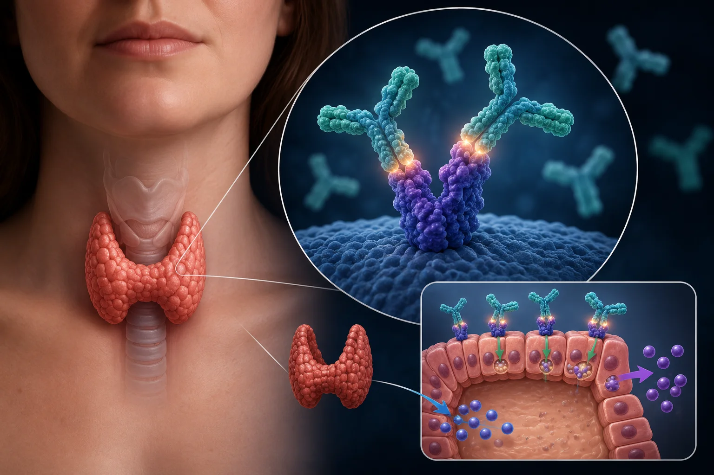
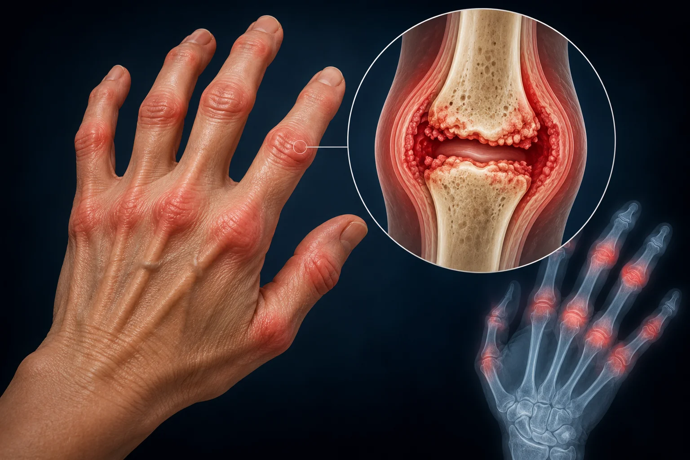
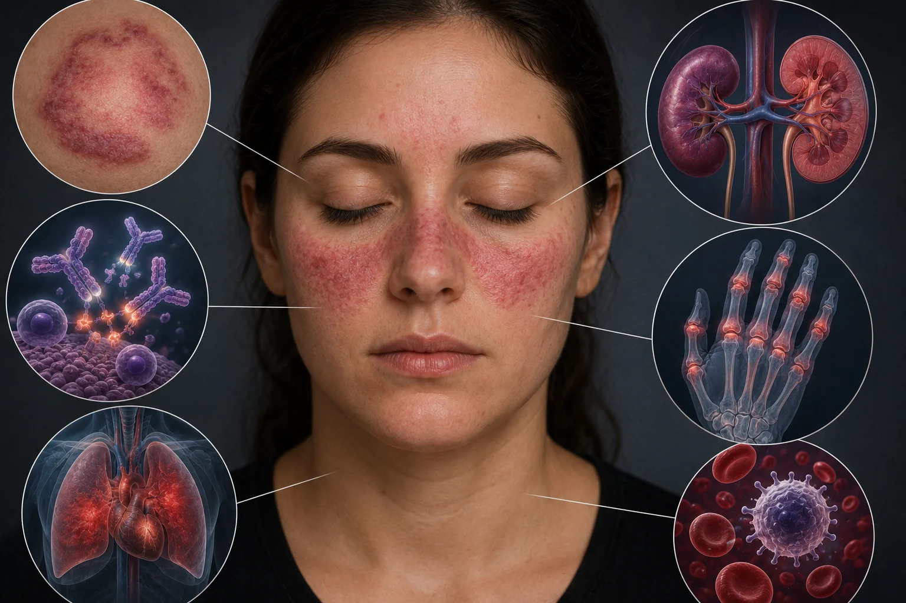
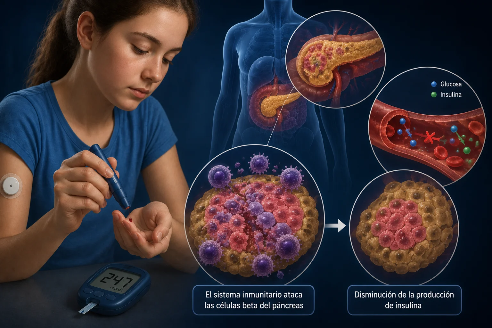

Fisiopatología y diagnóstico de trastornos autoinmunitarios
Disfunción del sistema inmunitario adaptativo caracterizada por la pérdida de la autotolerancia, lo que induce una respuesta efectora lesiva que ataca y destruye las células y tejidos propios del organismo.
¿Qué lo causa?
Posibles desencadenantes incluyen infecciones, fármacos y factores genéticos.
Ejemplos más comunes

Enfermedad de Graves
Autoanticuerpos estimulan el receptor de la hormona tiroidea (TSH), causando un hipertiroidismo primario.

Artritis reumatoide
Ataque autoinmune crónico contra la membrana sinovial de las articulaciones, provocando inflamación, dolor y destrucción del cartílago.

Lupus eritematoso sistémico (LES)
Producción generalizada de anticuerpos antinucleares que forman inmunocomplejos, dañando múltiples sistemas (riñón, piel, articulaciones, vasos sanguíneos).

Diabetes tipo 1
Destrucción citotóxica selectiva mediada por células T contra las células beta de los islotes pancreáticos, produciendo una deficiencia absoluta de insulina.
Abordaje diagnóstico y terapéutico
Se fundamenta en la sospecha clínica respaldada por análisis de sangre específicos, buscando la presencia de autoanticuerpos (anticuerpos antinucleares — ANA, factor reumatoide, anti-CCP) junto con reactantes de fase aguda (PCR y VSG).
Se orienta a modular la respuesta inmune aberrante empleando medicamentos inmunosupresores, corticoides y terapias biológicas dirigidas para controlar los brotes y mantener la remisión de la enfermedad.